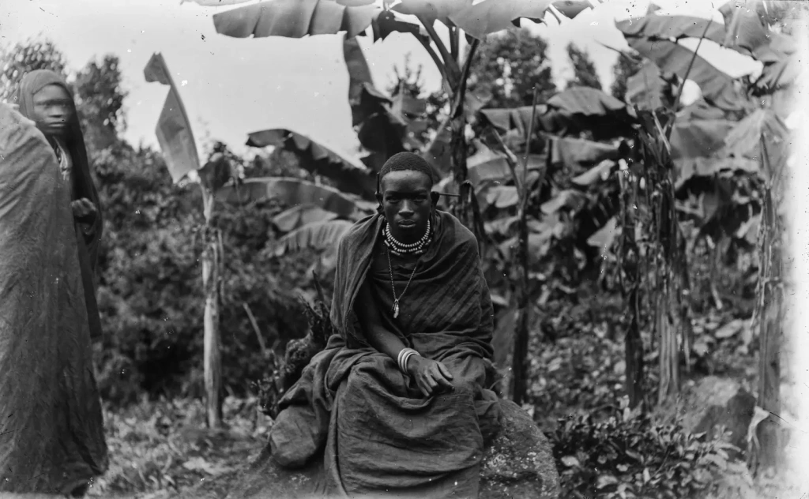
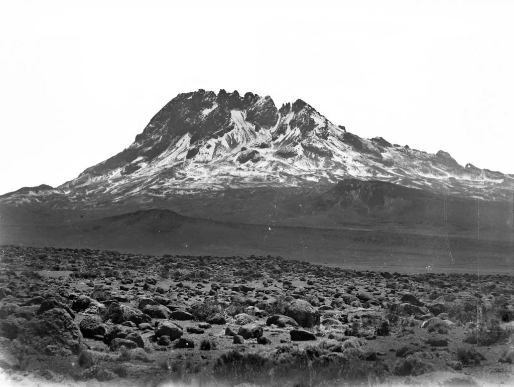
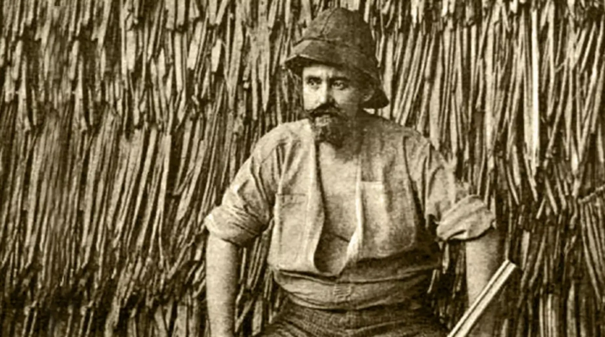
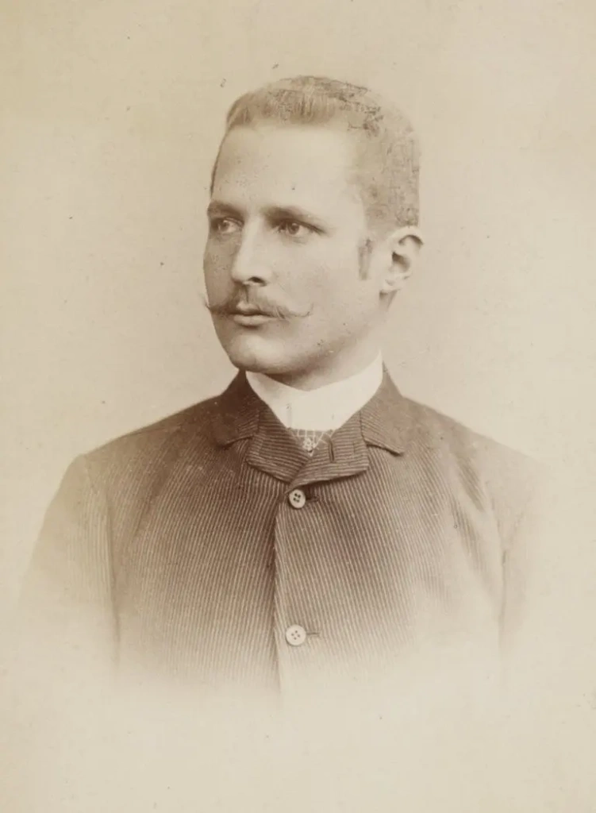
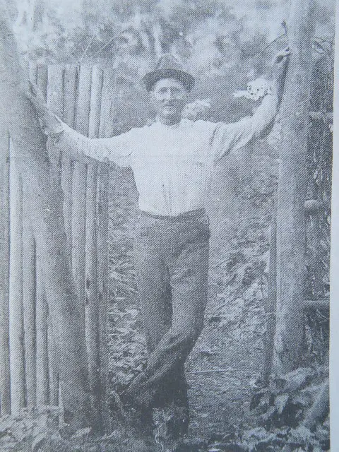
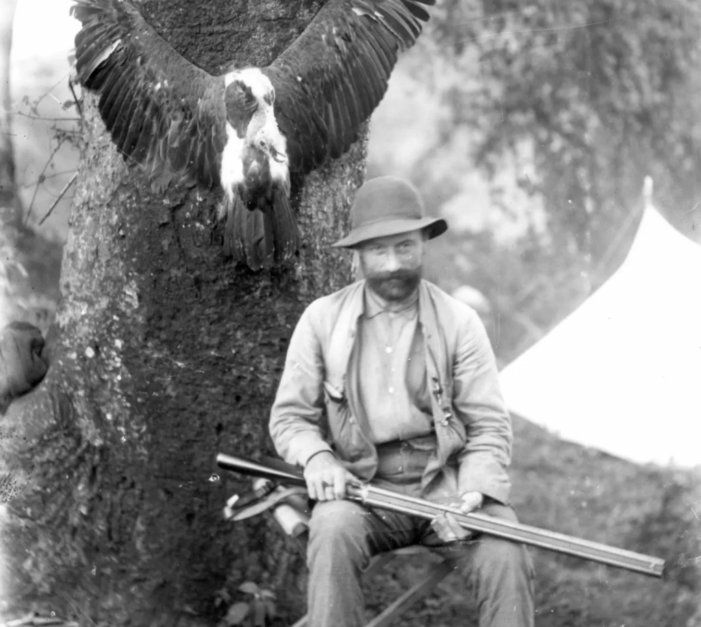
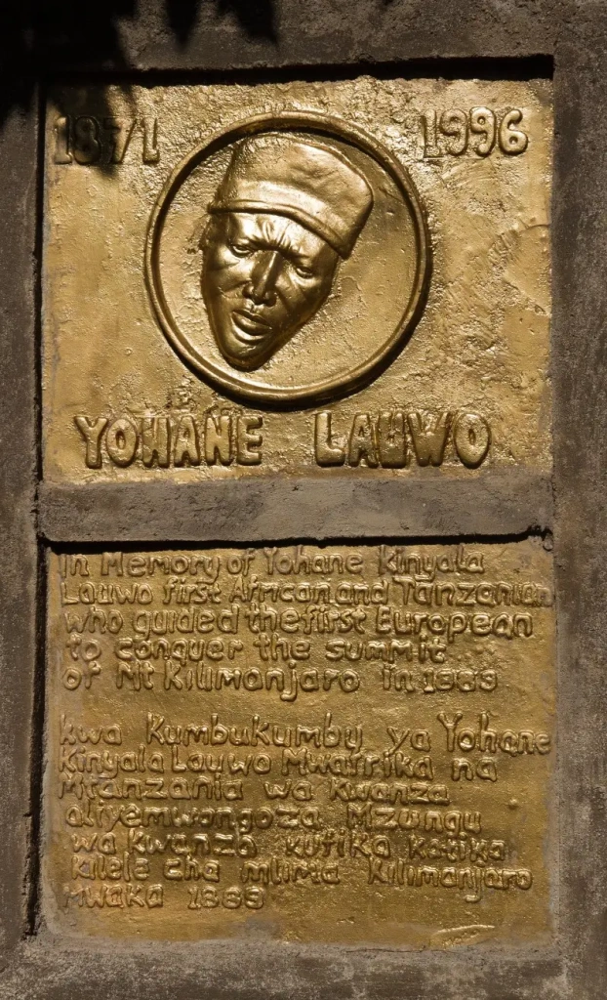
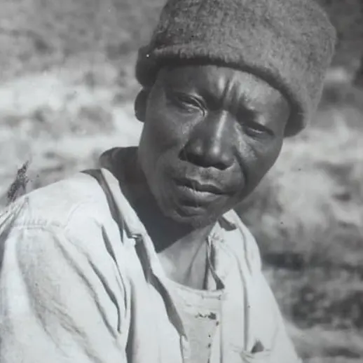
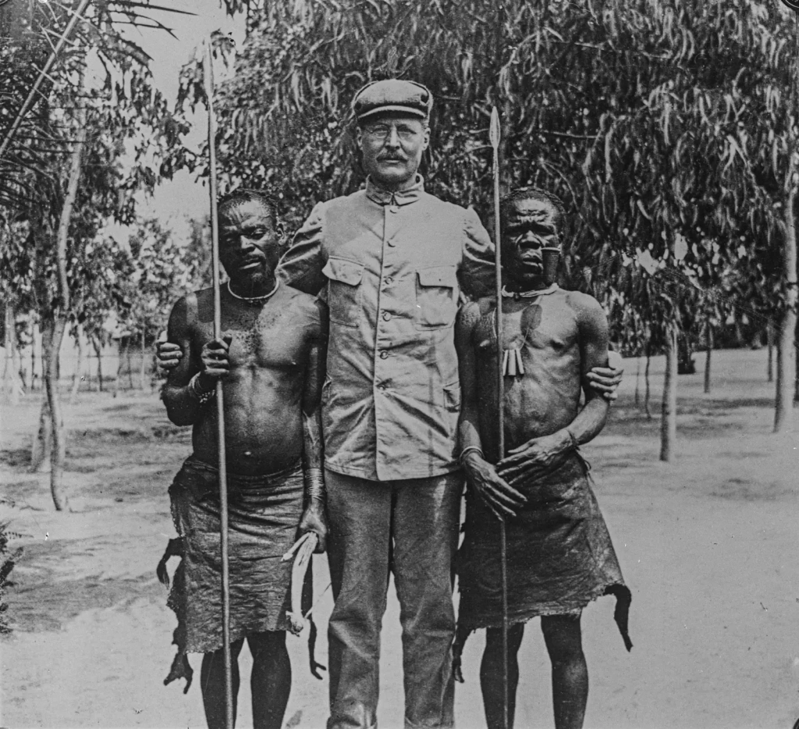

Climbing
Climbing In 1885, modern Tanzania, Burundi, Rwanda, and part of Mozambique became , making Mount Kilimanjaro the highest mountain in the German Empire. Just four years later, in 1889, German geographer Hans Meyer and Austrian climber Ludwig Purtscheller were the first Europeans to reach the top of this famous African mountain.
More than a century has passed since the first expeditions to the summit of Kilimanjaro. By now, the glacier fields have significantly shrunk, and climbing Kilimanjaro no longer seems as difficult. But back then, the terrain looked different, and conquering the highest point in Africa was a much more dangerous endeavor.
Discover who Meyer and Purtscheller were, explore the "conquest" of Kilimanjaro, and uncover fascinating facts about this historic event in our new article.
When was Kilimanjaro first climbed?
On October 6, 1889, Hans Meyer and Ludwig Purtscheller finally ascended the formidable summit of Mount Kilimanjaro. The ascent lasted from September 27 to October 9. The persistent and courageous traveler Meyer organized his third expedition with the experienced Austrian mountaineer and gymnastics teacher Ludwig Purtscheller. Gathering a large caravan of local porters and guides, Meyer passed through British territory to the foot of the Kilimanjaro massif, where he found support from the tribe chiefs. He had previously met with the the Chagga in 1887, which he detailed in his book "Across East African Glaciers: An Account of the First Ascent of Kilimanjaro".

By the time of his third expedition to Kilimanjaro, Meyer was already an experienced mountaineer. Nevertheless, the success of this ascent was largely due to the thorough approach to the expedition planning. With two failed climbing Kilimanjaro attempts behind him, he understood that the main obstacle to reaching the summit would be the lack of water and food. Supplies ran out too quickly. Descending to the base of the mountain to replenish supplies would nullify the progress made.
Understanding this problem, Meyer carefully planned the route in advance. Additionally, his friend Kurt Johannes (Captain Johannes) offered significant help. He was the governor of Moshi, the starting point of the expedition.
Meyer set up camps at various points along the route:
- Abbott Camp — at an altitude of 3,894 meters (12,775 ft).
- Kibo Camp — at an altitude of 4,263 meters (13,986 ft).
- A small camp at a lava cave just below the glacier line — at an altitude of 4,578 meters (15,016 ft).
Thanks to these camps, he was able to make several attempts to reach the highest peak of Kibo without having to return to the starting point each time. At the same time, porters brought provisions to the camps located in the alpine desert zone every few days.
After resting at the final camp, Meyer and Purtscheller resumed their ascent. They started at four in the morning and by noon approached an ice wall with a 30-meter (98 ft) deep crevice. Meyer later named it "Johannes Notch" in honor of his friend and Moshi's governor Captain Johannes.

Cutting steps in the ice, Meyer and Purtscheller continued towards a rocky outcrop. They walked along the caldera (crater rim) for another two hours until they reached the summit of Kibo. After spending about 40 minutes there, the two mountaineers descended.
Thus, on October 6, 1889, Meyer and Purtscheller were the first to reach the highest point in Africa, which Meyer patriotically named "Kaiser Wilhelm Spitze." This was 64 years before Mount Everest was climbed for the first time. Meyer almost accurately calculated the height of Mount Kilimanjaro at 6,010 meters (19,716 ft). Later, in 1952, this value was slightly corrected to 5,895 meters (19,341 ft).
“I was the first to set foot on the culminating peak, which we reached at half-past ten o'clock . Taking out a small German flag, which I had brought with me for the purpose in my knapsack, I planted it on the weather-beaten lava summit with three ringing cheers, and in virtue of my right as its first discoverer christened this hitherto unknown and unnamed mountain peak - the loftiest spot in Africa and in the German Empire - Kaiser Wilhelm's Peak. Then we gave three cheers more for the Emperor and shook hands in mutual congratulation.” — Hans Meyer, «Across East African Glaciers: An Account of the First Ascent of Kilimanjaro», 1891.

Ludwig Purtscheller also left his mark in the history of Kilimanjaro's conquest. After climbing Mawenzi Peak, specifically its second-highest point, he named it after himself. It seems that the mountaineer simply made a mistake, thinking it was the highest peak of the Mawenzi volcano. However, the height he conquered was only 5,120 meters (16,794 ft), while the highest peak of Mawenzi reaches 5,148 meters (16,893 ft) and now bears the name of the leader of the first successful expedition, Hans Meyer.

The entire expedition cost Meyer about 30,000 marks. This was his third attempt to climb Kilimanjaro.
«"Money certainly did not play a decisive role in the life of the Meyers," says Heinz Peter Brogiato, head of the Leibniz Institute of Regional Geography in Leipzig.»
It is important to note that in 1961, Britain granted independence to Tanganyika, the mainland part of modern Tanzania. And already in the next year, 1962, Kaiser Wilhelm Peak was renamed "Uhuru Peak" which means "Freedom Peak" in Swahili.
Earlier attempts to reach the summit of Kilimanjaro
The recorded history of climbing Kilimanjaro started in the 19th century. In this section, we will explore the earliest attempts.
and — two German missionaries and travelers — were the first Europeans to start writing about Kilimanjaro in the 1840s. Rebmann even attempted to climb Kilimanjaro but could only reach the snowline. He was the first European to discover Mount Kilimanjaro. For a long time after, he couldn't convince the Western geographical community that there was snow on Kilimanjaro's summit. Believing in its presence in hot equatorial Africa was difficult even for respected and authoritative researchers.
However, since antiquity, non-Africans like Ptolemy, Aeschylus, and Herodotus have referenced mountains that likely included Kilimanjaro, associating them with sources of the Nile and descriptions of snow. Martín Fernández de Enciso, in his "Summa de Geografía" (1519), noted that west of Mombasa is the "exceedingly high" Ethiopian Mount Olympus and beyond it, the Mountains of the Moon, where the Nile originates.
First serious Mount Kilimanjaro expeditions
Count Samuel Teleki from the Austro-Hungarian Empire made the first serious attempt to climb Kibo, the highest peak of Kilimanjaro, in 1887. Along with Austrian Lieutenant Ludwig von Höhnel, leading an expedition of over 300 porters, they reached Mount Meru, 40 km (24.9 mi) southwest of Kilimanjaro, via the Pangani River, and then tried climbing Kilimanjaro.
But Teleki also only reached the snowline. He had to turn back due to "eardrum problems." Despite this, he managed to explore much of the East African Rift Valley, and his name is forever inscribed in the history of Kilimanjaro's conquest.

Later, American naturalist Dr. Abbott, who primarily came to study local fauna and flora, made a rather desperate attempt to climb Africa's main peak. But early in his climbing Mount Kilimanjaro expedition, he felt very unwell perhaps due to acute mountain sickness, ending the trip. However, Abbott's partner, Otto Ehlers from the German East Africa Company, continued further. How far he got remains unknown. Ehlers later claimed to have reached 5,904 meters (19,367 ft). As we know today, it is actually 8 meters (26 ft) higher than the mountain's highest point. Various discrepancies cast doubt on the truthfulness of Ehlers' claims, so his statement was not taken seriously.
Despite the failed attempts to conquer Kilimanjaro, both Teleki and Abbott played important roles in the success of the future conquest of the "Roof of Africa." Teleki, for example, provided Meyer with useful information about the ascent — they accidentally met during Meyer's first trip to the region in 1887. Abbott helped with accommodation in Moshi during the successful climbing Kilimanjaro expedition in 1889.
Meyer repeatedly attempted to climb Kilimanjaro, with both failed and successful attempts. After the first time in 1887, when he reached a height of 5,400 meters (17,717 ft), the determined German traveler returned the following year for another attempt to reach what is now known as Uhuru Peak, the goal of all climbing Kilimanjaro expeditions. This time, he was accompanied by an experienced African traveler Dr. Oscar Baumann from Austria.
Unfortunately, they chose a bad time for their ambitious endeavor. had just begun — an Arab uprising against German traders on the East African coast. Meyer and Baumann were captured, chained, and taken hostage by Sheikh Abushiri, the leader of the insurgents. Eventually, both survived but only after a ransom of ten thousand rupees was paid.
Thus, Meyer's first two attempts to climb Kilimanjaro were not very successful. However, the third expedition opened new horizons for the traveler. Together with Ludwig Purtscheller, he became the first person to climb Mount Kilimanjaro.
Who was Hans Meyer?
The German explorer and traveler was born on March 22, 1858, in the small town of Hildburghausen. Even as a child, Meyer showed remarkable ingenuity and a thirst for new knowledge. He was particularly fascinated by cartography and geographical literature. Hans was the son of a wealthy publisher from Leipzig. He enrolled at the University of Leipzig, where he studied geography and natural sciences. At the same time, he began to dream of traveling to distant lands.

Meyer embarked on his first major expedition while still a student. In 1879, he went to the United States, and this trip became his starting point in a world full of exciting adventures. Meyer traveled in the Andes in South America and the Rwenzori Mountains in Africa. But all these expeditions were just warm-ups for his historic ascent to Mount Kilimanjaro.
After conquering the highest point in Africa, Meyer continued to study the glaciers and volcanic massif of Mount Kilimanjaro. For example, in 1894, together with German illustrator Ernst Platz, he circumnavigated the entire mountain, studied its glaciation, and documented the local terrain in drawings. Even in this last expedition to climb Mount Kilimanjaro, Meyer made numerous discoveries related to the characteristics of African volcanoes.
Ernst Platz, although not considered among the elite mountaineers of his era, achieved several notable first ascents, including Germany's Watzmann Mountain and the Alpine Violet Towers in 1895. On Mount Kilimanjaro, an internal cone of the Shira volcano was named in his honor. However, following the British takeover after World War I, the name Platz Cone was mistakenly altered to Place Cone.
Returning to Meyer and his contributions to the development of mountaineering, it is worth mentioning his ascent in the Canary Islands in 1894 and the exploration of a volcano in Ecuador in 1904. These two landmark expeditions also brought many important discoveries. In 1899, Meyer became a professor at the University of Leipzig, where in 1915 he was appointed director of the Institute of Colonial Geography.

Hans Meyer died in Leipzig on July 5, 1929, at the age of over 70. During his bright and eventful life, he not only performed a real feat by being the first to climb the summit of an impregnable African mountain but also contributed greatly to the study of then-unknown lands and peoples.
Who was Ludwig Purtscheller?
Meyer's partner in the expedition to climb Kilimanjaro, Ludwig Purtscheller, was born on October 6, 1849, in Innsbruck-Wilten, Tyrol. From a young age, he was deeply passionate about the mountains, seizing every opportunity to hike. This fervor for mountaineering led him to conquer more than 1,600 peaks worldwide. During that era, achieving such a remarkable number of successful ascents was an extremely rare achievement.
«"This is a wonderful birthday gift for me, I am 40 years old today," said Purtscheller. The African giant was defeated, no matter how difficult he made the struggle for us, thus ending more than forty years of siege and assault on Kilimanjaro.»
In his teenage years, young Ludwig joined the local tourist club and took an active part in Alpine expeditions. These early ascents gave him a strong start for upcoming adventures. For a time, Purtscheller also worked as a clerk in a mining company, where he gained valuable knowledge in mineralogy, which also came in handy in future travels.

Conquering mountain peaks was not the only calling of this versatile man. He dedicated the second part of his professional life to teaching. After passing the gymnastics teacher exam in Graz, he first settled in Klagenfurt and then moved to Salzburg in 1877. There he worked as a teacher at a pedagogical college and a state secondary school until his death.
Purtscheller's contemporaries recall that this talented and courageous researcher had extensive knowledge in geography, geology, mineralogy, botany, zoology, folklore, and history. He was eloquent, fluent in both Italian and French, and admired by his colleagues and fellow mountaineers alike.
Purtscheller successfully combined his teaching career with frequent expeditions to the Alps. Notably, during his hikes, he often refused the help of local guides, forging his own path into the mountains, bravely facing fears and the unknown. He was considered a true hero among mountaineers, who frequently shared tales of his daring exploits and achievements.
Ludwig Purtscheller died just after turning 51. This happened on March 3, 1900, after an accident at Aiguille du Dru near Mont Blanc in France. After falling into an icy crevasse, he sustained serious injuries from which he never recovered.
Lauwo or Amani: Who accompanied the European conquerors of Kilimanjaro?
During the 1889 expedition, 16 Africans from the Chagga tribe accompanied the Europeans to the summit of Kilimanjaro. They stayed with the group as long as they were comfortable, but as the altitude increased, they suffered from altitude sickness and cold. At a certain point, they stopped. Only one person continued the furthest with Meyer and Purtscheller, but there are still debates about who it was.
Many sources, especially African ones, attribute this proud title to a man named Yohani Kinyala Lauwo, also known as the "Old Man of Kilimanjaro" — an inscription that adorns a memorial plaque in Kilimanjaro National Park. But questions arise about Lauwo's involvement.

The main argument against Lauwo is the inconsistency of dates. The Tanzanian was born around 1871 (other sources suggest 1872 or 1867) and died on May 10, 1996. If he was indeed Meyer's guide at 18 and died in 1996, Lauwo would have lived to be 125 years old, which sounds highly improbable.
Lauwo was indeed a guide and likely climbed Kilimanjaro multiple times, accompanying expeditions. However, his first ascent certainly did not occur in 1889 with Hans Meyer and Ludwig Purtscheller. His career as a guide probably began in the 1940s.
Moreover, Lauwo himself couldn't recall details of this journey during his lifetime. It's suggested that the confusion arose around the 100th anniversary of Kilimanjaro's conquest in 1989, when local authorities were eager to find and honor witnesses to the legendary expedition.

After Lauwo was mistakenly chosen as the local celebrity who first among his compatriots climbed Africa's tallest mountain, this legend was actively supported by his relatives, the media, and Lauwo himself. Moreover, he once claimed that Johannes Notch was named after him, although, as mentioned earlier, Meyer named the famous crevice after his friend, the governor of Moshi — Captain Johannes.
As for Meyer's ascent, his main guide was the experienced professional mountaineer Purtscheller. He consciously chose him as his companion and guide, bringing him from Europe. But there was another person — a local porter who went further with the Germans than anyone else but did not reach the summit. This person was Muini Amani, not Lauwo.
Muini or Mwuni Amani (circa 1869 – circa 1909) was a porter and cook from Pangani, a small town on the coast of modern Tanzania. When he was about 20 years old, he accompanied the Europeans on their ambitious journey to the "Roof of Africa," as evidenced by Meyer's records. His participation fits logically into the history chronology. Expeditions to Kilimanjaro arrived by ship, and the German explorers took Amani with them from the coast.
But again, Muini Amani did not climb the Kibo volcano summit. The man indeed went further with Meyer and Purtscheller than other escorts but eventually stayed to wait for the Europeans in a cave later named after Hans Meyer. He did not have professional equipment or suitable clothing.
In Anton Ziegler's book "Explorers of the Mountains, Volume 2" (Anton Ziegler: Ludwig Purtscheller. Eine Auswahl. Erschließer der Berge, Band 2) 1926, it is stated that Hans Meyer and Ludwig Purtscheller were independent travelers, and Muini Amani from Pangani was only a porter up to the last bivouac points (camps). For example, Purtscheller is quoted in the book:
«In Muebache, still surrounded by a dense, gray gallery forest, we set up the central camp and sent our porters there. Two days later, on October 2 (1889), Meyer and I, accompanied by a native from Pangani named Muini Amani, pitched a tent on the saddle plateau.»
Further, Muini Amani's name is mentioned again. It is clear that his primary task was to deliver things to the camp, so he never intended to climb the summit with the explorers from the beginning:
«At noon on October 5th (1889), we set out again to establish a bivouac at a higher altitude. Muini Amani, who carried the sleeping bags and blankets, accompanied us. The bivouac site we chose was located in the great glacier valley, at the foot of a hollowed, sheer rock face, at an elevation of 4,620 meters above sea level.»
Even more evidence of Amani's involvement in the legendary expedition can be found in Meyer's own "Across East African Glaciers: An Account of the First Ascent of Kilimanjaro":
«A very comical figure Mwini cut in his nondescript alpine rig-out. Over his skinny shanks he had drawn a couple of pairs of ragged woollen drawers, which at fifty different points afforded interesting glimpses of a faded woollen shirt. The tattered remnants of an old red military jacket, which had once adorned the shoulders of some dashing Scotch sergeant, did duty as a coat, while his feet were covered or revealed - by a pair of my cast-off socks and an old pair of yellow slippers. Of his face nothing was visible except the nose, his whole head and neck being swathed in the voluminous folds of a gigantic turban, which, girt around his loins, on ordinary occasions was his only dress. »

Meyer's diaries contain numerous references to the Tanzanian, who, unlike Lauwo, truly participated in the first ascent of Kilimanjaro. With such a wealth of evidence, it becomes even stranger that for many years, local authorities and media continue to support the legend of Lauwo.
Afterword
The first successful ascent of Kilimanjaro made Hans Meyer a world-renowned figure. His observations of glaciers, mapping, and trigonometric measurements long formed the basis of numerous studies of mountains and volcanoes. As a publisher, he also actively spread information about his travels and discoveries. He published large and detailed reports based on his diaries. Thanks to these reports, today we can learn many details and facts about that distant historical event.
In the decades that followed his success on Kilimanjaro, few could repeat Meyer's feat. For example, the second successful ascent to Kaiser Wilhelm Peak occurred only 20 years later — in 1909. In 1927, Scottish mountaineer Sheila MacDonald became the first woman to reach the summit of Kilimanjaro. It was only by the end of the 1950s that established routes to the summit and camps along the way were created.
All content on Angelino Adventures is created with expert insights and thorough research, in line with our Editorial Policy.


Want to know more about Tanzania adventures?
Get in touch with our team! We've explored all the top destinations across Tanzania. Our Kilimanjaro-based adventure consultants are ready to share tips and help you plan your unforgettable journey.
 Tanzania Safaris
Tanzania Safaris
 Kilimanjaro and other mountains
Kilimanjaro and other mountains
 About Tanzania
About Tanzania
 Tanzania Islands
Tanzania Islands